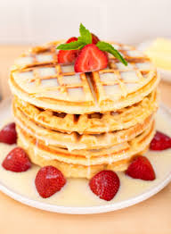

Best Waffle recipe in the world

Ingredients
- 1 cup of flour
- 1 cup of milk
- 1 tsp of vanilla extract
- 2 tsp of baking powder
- 1 egg
- 2 tsp of sugar
Direction
- Combine the flour, sugar and baking powder into a bowl
- Mix thouroughly with whisk
- Add the milk, vanilla and egg
- Continue to stir until the batter is smooth (about 3 minutes)
- The batter is ready for waffle making